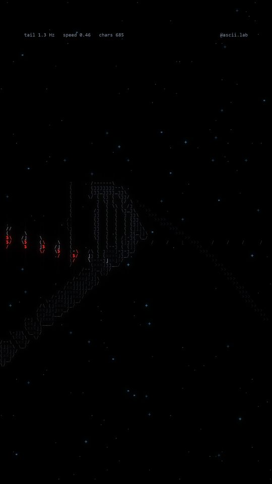

LimProjects
dashboard
Laser
CNC
Vader
LimProjects Dashboard
−
100%
+
Reset
🔦 Laser engraver
–
□
✕
🔌
Waiting for heartbeat…
The ESP32 pushes status to the relay every ~10 s.
⚙️ CNC machine
–
□
✕
🔌
Waiting for bridge…
Run
cnc-bridge.js
on a PC on the home LAN to relay FluidNC status.
🖤 Darth Vader — ASCII
–
□
✕

▶
0.00 / 2.00 s
Procedural ASCII — rendered from math, not a video. Drag the bar to scrub.